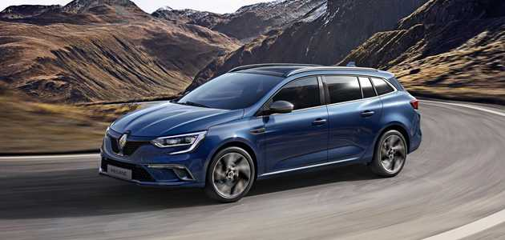

1877’de Paris’te doğan Louis Renault gerçek bir beyzadedir. Babası tarafından farklı meslekler yapmaya zorlanmamış, hayal gücü her zaman desteklenmiş şanslı bir çocuktur. Louis Renault’un ilgi alanı ise makinelerdir. 5 yaşındayken arkadaşlarından duyduğu lokomotifi görmek için istasyona koşan, 15 yaşındayken harçlığından artan kalan parayla 0.75 beygir gücünde De Dion Bouton marka alıp parçalarını sökmeye kalkan bir dahidir.
Faytondan bozma De Dion-Bouton’un üreticileri, bu otomobili mümkün olan en ucuz fiyata üretip herkesin kullanmasını sağlamayı isterler. Louis Renault da kardeşleri ile birlikte bu arabayı nasıl geliştirebileceklerini düşünürler. Sonunda De Dion-Bouton’a ilaveler yapıp neredeyse onu baştan yaratan Louis Renault, ilk minik otomobili olan Voiturette’yi üretmiş olur.
Voiturette, 3 ileri 1 geri vitesi, motordaki gücü kayış ya da zincirle değil; mil yardımıyla arka dingile aktarması, sessiz kullanımı ve hem düz yolda gidip hem yokuş çıkabilmesi ile çığır açar ve 1898 yılında sokaklarda boy gösterir.
Louis, kardeşleri Fernand ve Marcel’le birlikte 1898 yılında, yaşı daha 21 iken “Renault Freres” isimli şirketi kurar. 1899 yılında Paris-Trouville arasında düzenlenen bir yarışta Renault kardeşlerin ürettikleri özel otomobil yarışı kazanır. Bu başarıdan sonra araba siparişleri hızla gelir ve babaları kardeşlere 8 bin İngiliz sterlini vererek destek olur.
İşler büyür, ilk kapalı karasore sahip araç, Renault’lar tarafından yapılır. Billancourt’daki garaj fabrikaya çevrilir, 110 kişi bu fabrikada çalışmaya başlar. 1900 yılında ürettikleri E model spor arabayla Paris-Bordeaux ve Paris-Berlin yarışlarını kazanırlar. 1902 yılında ilk silindirli H modelinin ardından dört silindirli K modeli ile Paris-Viyana yarışlarında da zafer Renault’ların olur.
